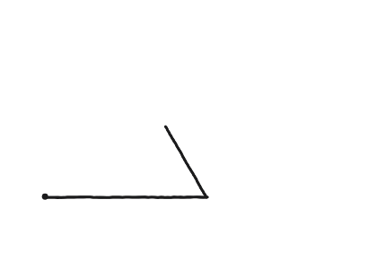
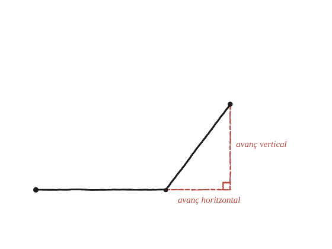

Fes una llista curta de longituds i girs. Quins problemes de triangles cal resoldre per determinar si el teu polígon és tancat?

Una llista de problemes, no un polígon concret
No es demana comprovar un polígon en particular: es demana la llista de problemes que caldria resoldre, en general, per saber si una successió del tipus "avança tant, gira tant" torna mai exactament al punt de partida.
Descompondre cada tram en dues direccions
Cada tram de la llista —una longitud, en una direcció determinada pels girs acumulats fins aquell moment— es pot descompondre en un avanç horitzontal i un de vertical: exactament el cosinus i el sinus de l'angle acumulat, multiplicats per la longitud del tram. És, literalment, un triangle rectangle amb la longitud del tram com a hipotenusa.

Dues sumes, no una
El polígon es tanca si, i només si, dues sumes independents donen zero alhora: la suma de tots els avanços horitzontals de tots els trams, i la suma de tots els avanços verticals. Que una de les dues doni zero no és suficient —cal que totes dues ho facin a la vegada.
Cada tram, un problema de triangle rectangle
La llista de problemes que calia produir és, doncs: per a cada tram, un problema de triangle rectangle (longitud coneguda, angle conegut, trobar els dos catets), i després sumar tots els catets horitzontals per una banda i tots els verticals per l'altra, comprovant que totes dues sumes donen zero.
Un polígon fet de trams "avança, gira" es tanca exactament quan dues sumes independents —la de tots els avanços horitzontals i la de tots els avanços verticals— donen zero alhora. Cada tram individual és un problema de triangle rectangle (longitud i angle coneguts, catets per trobar), i aquesta mateixa descomposició en dues sumes és el nucli de com es construeixen coordenades i vectors a partir de la trigonometria.
Comprovació
Tres trams: 3 unitats a 0°, 4 unitats a 90°, 5 unitats en la direcció que tanca el triangle (el 3-4-5 clàssic, amb el tercer tram a uns 233° respecte de l'eix horitzontal). Sumant els tres avanços horitzontals i els tres verticals per separat, totes dues sumes donen exactament zero.